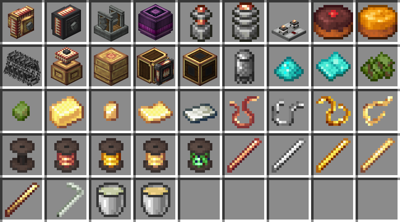

Create Crafts & Additions расширяет Create и действует как мост между электричеством и кинетической энергией Create, добавляя электродвигатель, который генерирует кинетическую энергию из энергии кузницы, и генератор переменного тока, который делает противоположное с КПД 75%. Для изготовления этих предметов вам нужно сделать прокатный стан — кинетическую машину, используемую для изготовления стержней и проволоки. Все рецепты доступны через JEI.
Добавленные элементы технологий призваны предоставить игроку как можно больше вариантов дизайна. Благодаря Create игра не ведется внутри множества пользовательских интерфейсов, а требует от вас настройки хитроумных анимированных компонентов, работающих вместе во многих возможных вариантах.
Визуальная внутриигровая документация Create под названием «Ponder» расскажет вам обо всех добавленных механиках и гаджетах.
Важно: Чтобы иметь возможность видеть все рецепты, необходимые в Create, рассмотрите возможность установки JEI . Книга ванильных рецептов сама по себе не сможет помочь вам в этом процессе.
Разработка Узнайте о поддерживаемых версиях и о том, что сейчас находится в разработке, на этой специальной вики-странице. Уважаемые комментаторы, пожалуйста, будьте вежливы друг с другом — если люди просят порты, просто дайте им ссылку на эту страницу. https://github.com/Creators-of-Create/Create/wiki/dev.status
.png)